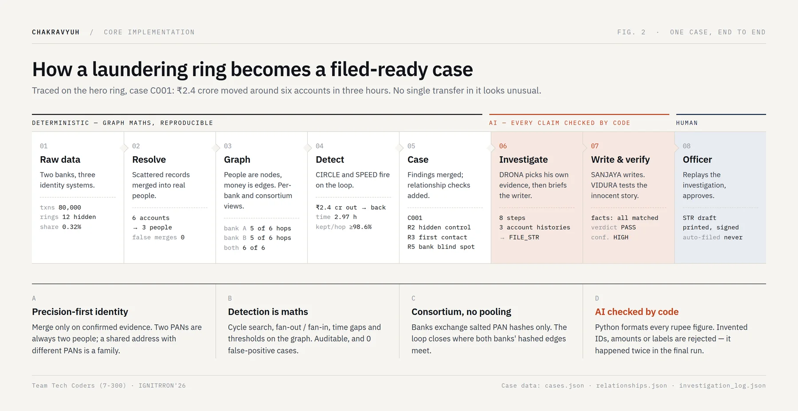
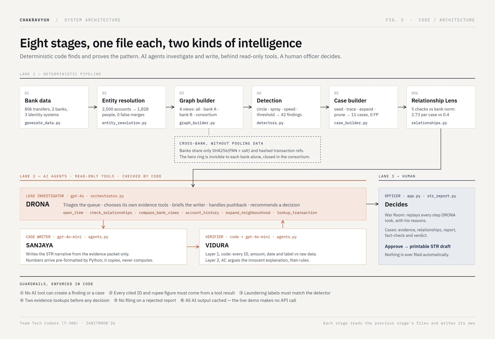

CHAKRAVYUH
Banks check transactions one at a time, but laundering is a shape made of hundreds of innocent-looking ones. CHAKRAVYUH finds the shape, proves it with the bank's own records, and hands the officer a finished, fact-checked case instead of an alert.
The crime isn't in any single transaction
A launderer never moves money in one suspicious transfer. They split it into many small, ordinary-looking payments, pass them through other people's accounts, and bring the money back clean. Bank software checks each transfer on its own, so each one passes.
The result is bad in both directions. Rule engines raise mostly false alarms (85–95% by industry estimates), and investigators drown in noise. Meanwhile real networks go unseen, and in India the response has often been to freeze individual accounts in bulk, sometimes over disputed amounts as small as ₹100, while the network behind them is never found.
Existing tools score transactions. CHAKRAVYUH scores networks.
Eight stages from raw records to a filed-ready case
Each stage is one file that reads the previous stage's output and writes its own, so every result can be traced back to raw rows.
- Bank data80,000 transactions across two banks and three identity systems
- Who is who2,500 accounts resolved to 1,828 real people
- The money mapPeople as nodes, money as edges; single-bank and cross-bank views
- DetectorsSeven patterns from the regulator's own indicators: circles, fan-out, speed, structuring and more
- CasesFindings on the same network merge into one case
- AI investigatesDRONA chooses read-only evidence tools; SANJAYA writes the case
- Code checksEvery ID, amount and date is checked against raw data; VIDURA argues the innocent side
- Officer decidesA human approves before anything is filed

Three decisions that make it trustworthy
Work out who people really are before looking for crime
The same person often appears three or four times in a bank's records, spelled differently. Until those records are joined, the map is wrong and the circle is invisible. Matching is precision-first: two different PANs can never be the same person, a shared address with different PANs means family members rather than one person, and weak links are flagged but never chained together. Missing a link is acceptable. Accusing an innocent person is not.
Two banks catch a shared gang without sharing customer data
Half of a real network usually sits at another bank. Only a one-way scrambled code made from the PAN crosses between banks, never names, readable PANs, addresses, balances or account numbers. The demo ring is invisible to each bank alone and visible to the consortium.
The AI is never trusted. It's checked by arithmetic
Detection is plain graph mathematics, with no model and no training data, so every finding is reproducible. The language model only explains a finding that already exists, isn't allowed to write numbers itself, and code verifies every fact before a person reads it. All AI output is cached, so the live demo needs no network calls.

What it achieved on the test data
| Measure | Result |
|---|---|
| Transactions reduced to cases | 80,000 → 42 findings → 11 cases |
| Hidden laundering rings caught | 11 of 12 |
| False positives | 0 |
| Identity resolution | 2,500 accounts → 1,828 people, 0 false merges |
| Meaningful relationships per case vs random groups | 2.73 vs 0.4 |
| AI-written facts verified against raw data | 246 of 246 |
Honest limits
- The dataset is synthetic, generated with a fixed seed and twelve planted rings. It isn't real bank data.
- One of the twelve rings was missed. Precision was chosen over recall on purpose.
- Cross-bank linking depends on a PAN being present on both sides.
My role, and how the AI tools were used
I build with AI development tools and I'm open about it. My part is the work the tools can't do alone: choosing the problem, writing the specification and the rules every change must respect, splitting the build into small tested phases, and checking each result against the project's own output.
For CHAKRAVYUH, the rules were set before any code: detection stays deterministic, the answer key is read only by scoring code, AI output is cached so the demo needs no network, and every working stage is committed. I led a team through eight stages in 24 hours.
Every number on this page can be traced to a file in the repository (see the README and docs/EVIDENCE_PACK.md).